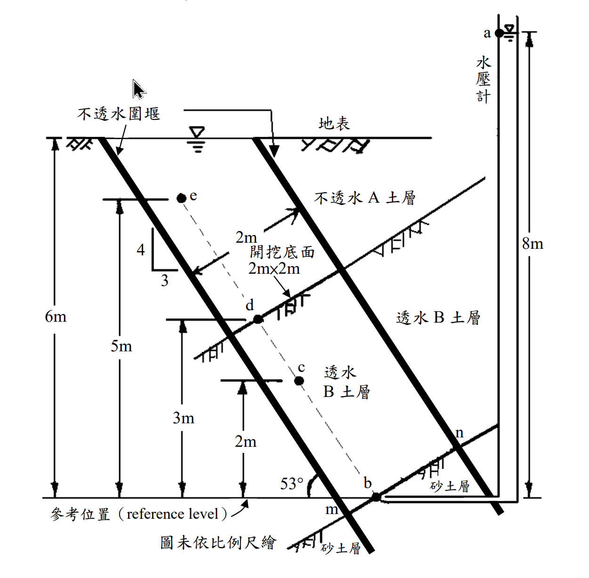

考題編號：SM-2011-2
主分類： SM-U1-2 土壤滲透
副分類：
分析法： 概念題 / 有效應力法
標籤： 流網, 滲流, 水頭計算, Darcy定律
1. 原始題目重述 (Problem Restatement)
二、某工地因施工需要在複雜土層進行傾斜向開挖底面為 2 m×2 m 正方形之圍堰開挖，如下圖所示，開挖後水在圍堰內土層 B 之土壤中產生滲流，試求：
(一) a、b、c、d、e 各點之總水頭、高度水頭及壓力水頭各為若干（m）？
(二) 試繪流經此土壤之流網及計算流經此土壤之平均水力坡降 $i_{bd}$ 為若干？
(三) 若此土層 B 之土壤透水係數 $k = 0.005 \text{ cm/sec}$，試計算其滲流量為若干（$\text{m}^3\text{/day}$）？（25 分）

圖說：本圖顯示一傾斜向圍堰開挖，邊界傾角為 4垂直:3水平（即 $\theta = 53^\circ$）。開挖底面為 2m × 2m 之正方形，位於高程 5m 處。透水層 B 位於不透水圍堰與不透水 A 土層之間，底部連接水頭高 8m 之砂土層。圖中標示 a、b、c、d、e 點，以供水頭計算。
2. 考題核心精神與出題者意圖
- 測驗考生對於一維與二維滲流中總水頭、高度水頭、壓力水頭關係的掌握度。
- 測驗是否能正確認知「流徑長度」（需沿流線方向計算，而非垂直高差）。
- 測驗流量計算中「垂直於流向之截面積」與「水平面積」的幾何轉換觀念。
3. 解題戰略地圖與陷阱分析
- 步驟 1：定義基準面（reference level = 0m），找出各點之高程 $Z$。
- 步驟 2：確認邊界條件。底面連接之砂土層水頭為 8m（$h_b = 8\text{m}$）；頂部開挖底面自由滲水，壓力水頭為 0，總水頭等於其高程（$h_e = 5\text{m}$）。
- 步驟 3：利用流徑長度 $L = \Delta Z / \sin 53^\circ$，計算水力坡降 $i$。
- 步驟 4：根據 $h = h_b - i \cdot s$，求出各點總水頭，再推算壓力水頭。
- 陷阱 1：流徑長度誤用垂直高差。斜向滲流的流徑是沿著 53° 的斜線，必須除以 $\sin 53^\circ = 0.8$。
- 陷阱 2：計算流量時，截面積誤用 $2\text{m} \times 2\text{m}$。由於流向傾斜，垂直流向的截面積應為 $A_{\perp} = A_{\text{horiz}} \times \sin 53^\circ = 4 \times 0.8 = 3.2\text{m}^2$。
- 陷阱 3：流網邊界條件的認知。水平的開挖面為等位線，因此流線接近頂部時必須轉向為垂直進入開挖面，這點在手繪流網時需特別注意。
3.5 變數層次分析
最終目標
求出各點水頭、水力坡降以及每日滲流量
本題關鍵公式（依計算順序）
-
點 b 到點 e 之流徑長度：
$$L = \frac{\Delta Z}{\sin\theta}$$ -
平均水力坡降：
$$\boxed{i} = \frac{\Delta h}{\boxed{L}}$$ -
各點總水頭：
$$h = h_b - \boxed{i} \cdot s$$ -
壓力水頭：
$$P = \boxed{h} - Z$$ -
正交流面積：
$$A_{\perp} = A_{\text{horiz}} \cdot \sin\theta$$ -
滲流量：
$$Q = k \cdot \boxed{i} \cdot \boxed{A_{\perp}}$$
L1：題目直接給定
- 符號 ∣ 數值 ∣ 說明
- $\theta$ ∣ $53^\circ$ ∣ 邊界傾角 (4:3，$\sin\theta = 0.8$)
- $h_b$ ∣ 8 m ∣ 底層砂土層之總水頭 (由水壓計a決定)
- $Z_e$ ∣ 5 m ∣ 開挖底面之高程 (由 e 點位置判斷)
- $A_{\text{horiz}}$ ∣ $4 \text{ m}^2$ ∣ 開挖底面水平面積 ($2\text{m} \times 2\text{m}$)
- $k$ ∣ $0.005 \text{ cm/s}$ ∣ 透水層 B 之透水係數
L2：需知識點推導
- 符號 ∣ 公式／來源 ∣ 卡關?
- $h_e$ ∣ 開挖底面壓力水頭為 0，故 $h_e = Z_e$ ∣
- $L_{be}$ ∣ $L_{be} = (Z_e - Z_b) / \sin\theta$ ∣
- $i$ ∣ $i = (h_b - h_e) / L_{be}$ ∣
- $A_{\perp}$ ∣ $A_{\perp} = A_{\text{horiz}} \cdot \sin\theta$ ∣
- $Q$ ∣ $Q = k \cdot i \cdot A_{\perp}$ ∣
L3：深層知識（不懂就卡住）
- 知識點 ∣ 說明 ∣ 卡關?
- 傾斜滲流流徑 ∣ 沿著邊界平行的斜線距離，並非垂直高程差。 ∣
- 流量截面積 ∣ 達西定律 $Q=kiA$ 中的 $A$ 必須是「垂直於流向」的面積。 ∣
- 流網正交性 ∣ 流網中的流線與等位線必須正交，接近水平自由邊界時流線需彎曲。 ∣
4. 步驟化詳細計算過程
（一）a、b、c、d、e 各點之總水頭、高度水頭及壓力水頭計算
Step 1：確定各點高程 (Elevation Head, Z)
由圖中參考位置 (0m) 與標示尺寸可知：
- $Z_a = 8\text{m}$ (水壓計頂部)
- $Z_b = 0\text{m}$ (透水層底部)
- $Z_c = 2\text{m}$
- $Z_d = 3\text{m}$
- $Z_e = 5\text{m}$ (開挖底面)
Step 2：確定邊界水頭
-
a 點：位於水壓計內水面，與大氣接觸，壓力水頭 $P_a = 0\text{m}$。
總水頭 $h_a = Z_a + P_a = 8 + 0 = \boxed{8\text{m}}$。 -
b 點：連接至水壓計的砂土層為高透水層，內部水頭一致為 8m。
總水頭 $h_b = \boxed{8\text{m}}$。壓力水頭 $P_b = h_b - Z_b = 8 - 0 = \boxed{8\text{m}}$。 -
e 點：位於開挖底面，水直接滲入開挖區。假設無積水，壓力水頭 $P_e = \boxed{0\text{m}}$。
總水頭 $h_e = Z_e + P_e = 5 + 0 = \boxed{5\text{m}}$。
Step 3：計算水力坡降與中間點水頭
由圖示斜率 $4:3$，可知傾角 $\theta = 53^\circ$，$\sin\theta = 0.8$。假設流線平行於不透水邊界：
- b 到 e 的流徑長度 $L_{be} = \frac{Z_e - Z_b}{\sin 53^\circ} = \frac{5 - 0}{0.8} = 6.25\text{m}$
- 總水頭差 $\Delta h = h_b - h_e = 8 - 5 = 3\text{m}$
- 滲流區段之水力坡降 $i = \frac{\Delta h}{L_{be}} = \frac{3}{6.25} = 0.48$
各點沿流向距 b 點的流徑長度 $s$ 及水頭計算：
-
c 點：$s_c = \frac{Z_c - Z_b}{\sin 53^\circ} = \frac{2 - 0}{0.8} = 2.5\text{m}$
總水頭 $h_c = h_b - i \cdot s_c = 8 - 0.48 \times 2.5 = \boxed{6.8\text{m}}$
壓力水頭 $P_c = h_c - Z_c = 6.8 - 2 = \boxed{4.8\text{m}}$ -
d 點：$s_d = \frac{Z_d - Z_b}{\sin 53^\circ} = \frac{3 - 0}{0.8} = 3.75\text{m}$
總水頭 $h_d = h_b - i \cdot s_d = 8 - 0.48 \times 3.75 = \boxed{6.2\text{m}}$
壓力水頭 $P_d = h_d - Z_d = 6.2 - 3 = \boxed{3.2\text{m}}$
計算結果彙整表：
| 點位 | 高度水頭 $Z$ (m) | 壓力水頭 $P$ (m) | 總水頭 $h$ (m) |
|:---:|:---:|:---:|:---:|
| a | 8.0 | 0.0 | 8.0 |
| b | 0.0 | 8.0 | 8.0 |
| c | 2.0 | 4.8 | 6.8 |
| d | 3.0 | 3.2 | 6.2 |
| e | 5.0 | 0.0 | 5.0 |
（二）試繪流經此土壤之流網及計算平均水力坡降 $i_{bd}$
1. 計算平均水力坡降 $i_{bd}$
- d 點的總水頭 $h_d = 6.2\text{m}$，b 點的總水頭 $h_b = 8\text{m}$。
- b 到 d 的流徑長度 $L_{bd} = \frac{Z_d - Z_b}{\sin 53^\circ} = \frac{3}{0.8} = 3.75\text{m}$。
- $i_{bd} = \frac{h_b - h_d}{L_{bd}} = \frac{8 - 6.2}{3.75} = \frac{1.8}{3.75} = \boxed{0.48}$
2. 流網繪製要點
- 邊界條件：
- 左側不透水圍堰與右側不透水 A 土層為流線。
- 頂部開挖底面（水平線）與底部砂土層交界（水平線）為等位線。
- 網格特徵：
- 在透水層 B 中段，流線應與兩側邊界平行（傾角 53°），而等位線與流線正交（傾角 37°）。
- 由於通道正交寬度 $B_{\perp} = 2 \times \sin 53^\circ = 1.6\text{m}$，流徑總長 $L_{be} = 6.25\text{m}$。若取流槽數 $N_f = 1$，則等勢降數 $N_d = \frac{6.25}{1.6} \approx 4$。故流網中段可畫出近似正方形的網格。
- 細節注意：接近頂部與底部時，因邊界為水平等位線，為滿足正交條件，流線在此處會發生局部彎曲以 90° 進入水平面。
(作答時建議手繪草圖：畫出兩條 53° 的平行線作為邊界流線，中間穿插 3 條與之垂直的直線作為等位線，並在上下兩端將流線稍作彎曲交於水平邊界。)
（三）計算滲流量 (m³/day)
- 透水係數 $k = 0.005\text{ cm/s} = 5 \times 10^{-5}\text{ m/s}$
-
正交於流向的截面積 $A_{\perp}$：
開挖底面為 $2\text{m} \times 2\text{m}$ 之水平面，其水平面積 $A_{\text{horiz}} = 4\text{m}^2$。
$A_{\perp} = A_{\text{horiz}} \times \sin 53^\circ = 4 \times 0.8 = 3.2\text{m}^2$ -
滲流量 $Q$ (使用達西定律)：
$$Q = k \cdot i \cdot A_{\perp} = (5 \times 10^{-5}\text{ m/s}) \times 0.48 \times 3.2\text{ m}^2 = 7.68 \times 10^{-5}\text{ m}^3\text{/s}$$ -
換算為每日滲流量：
$$Q = 7.68 \times 10^{-5} \times (60 \times 60 \times 24) = 6.63552 \approx \boxed{6.64 \text{ m}^3\text{/day}}$$
(註：若使用垂直流速法，垂直流速 $v_z = (ki) \times \sin 53^\circ = 1.92 \times 10^{-5}\text{ m/s}$，流量 $Q = v_z \times A_{\text{horiz}} = 1.92 \times 10^{-5} \times 4 = 7.68 \times 10^{-5}\text{ m}^3\text{/s}$，計算結果完全一致。)
5. 關鍵爭議點與進階探討
- 一維線性假設的合理性：本題計算水頭時隱含了「流線處處與邊界平行」的一維滲流假設。實際上，因頂底邊界為水平面而非與斜率正交，流網在端點附近會產生二維畸變。然而，相較於整體的流徑長度，此一邊界效應影響有限。在考試中，採用沿中心線之一維線性內插來計算各點水頭，是標準且唯一的預期解法。
- 流量截面積的常見錯誤：達西定律 $Q=kiA$ 中的 $A$ 必須是與流速向量垂直的截面積。許多考生會直接帶入水平面積 $4\text{m}^2$，導致答案放大 $\frac{1}{0.8}=1.25$ 倍。透過幾何轉換 $A_{\perp} = A_{\text{horiz}} \cdot \sin 53^\circ$ 是本題拿滿分的關鍵。